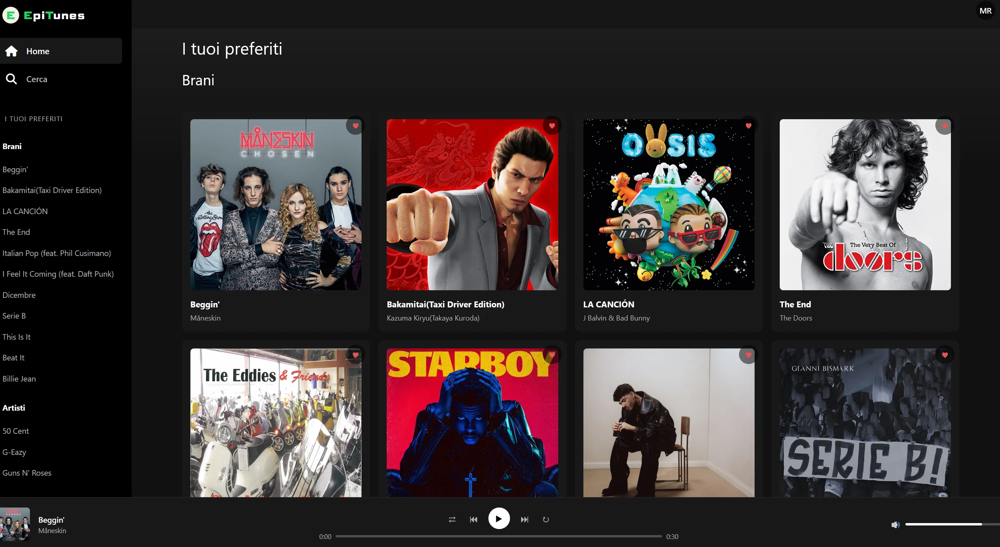
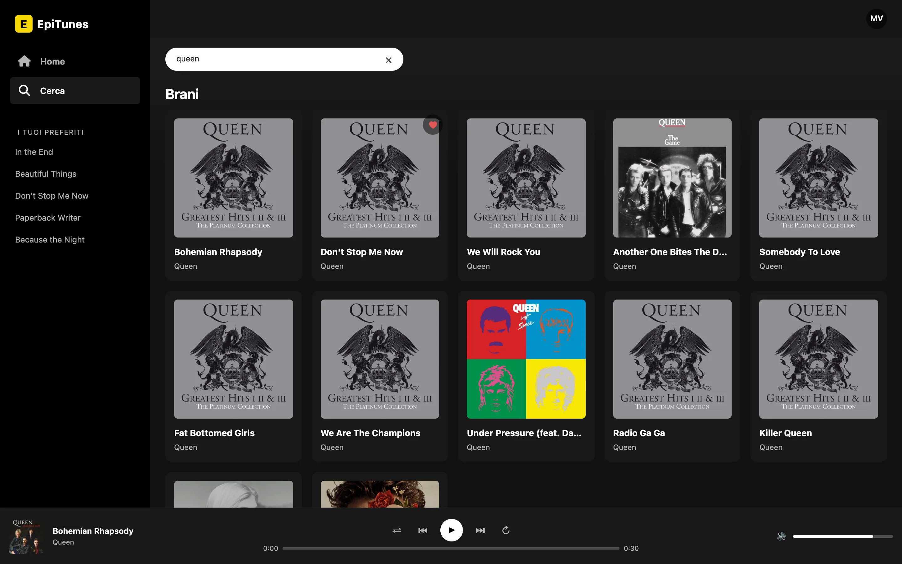
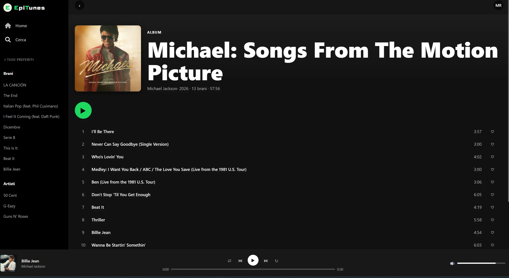
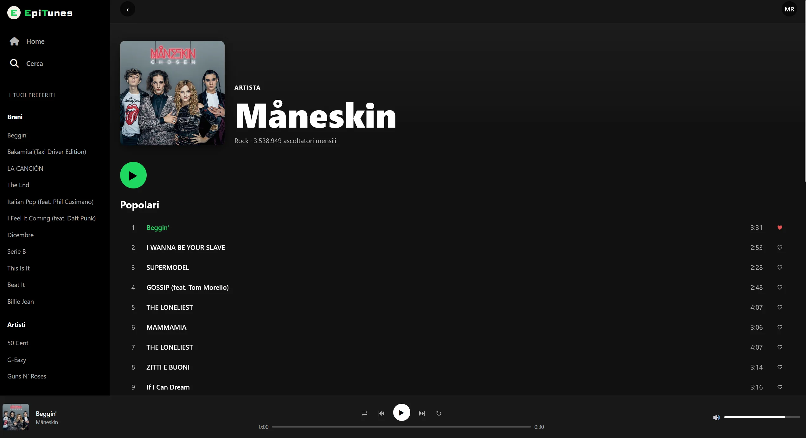
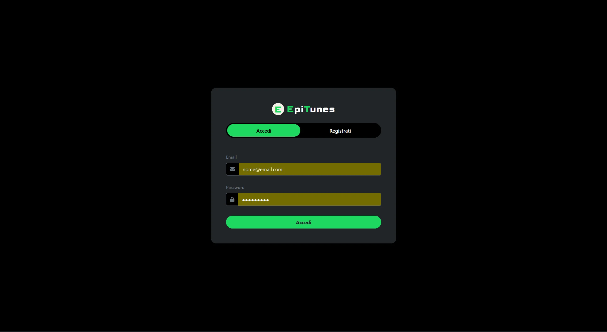
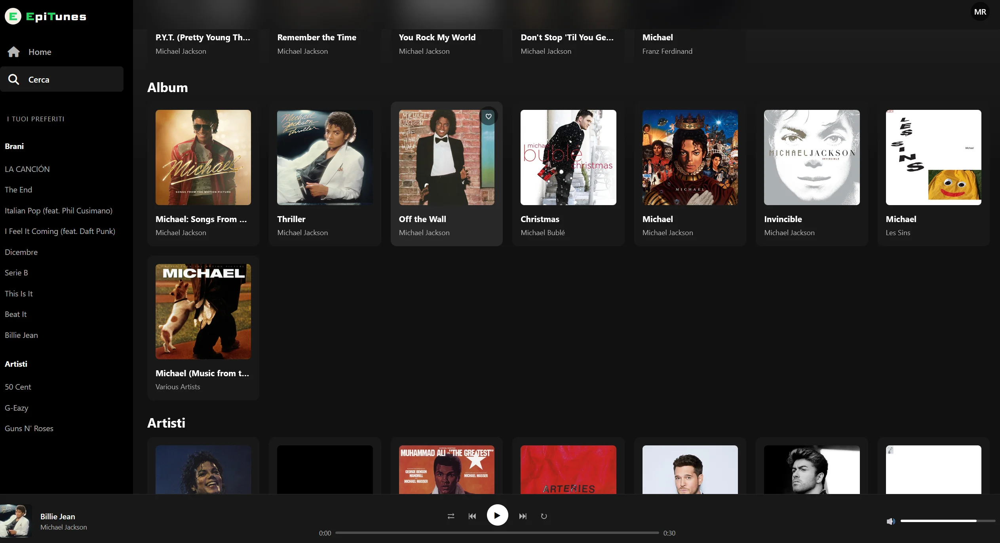
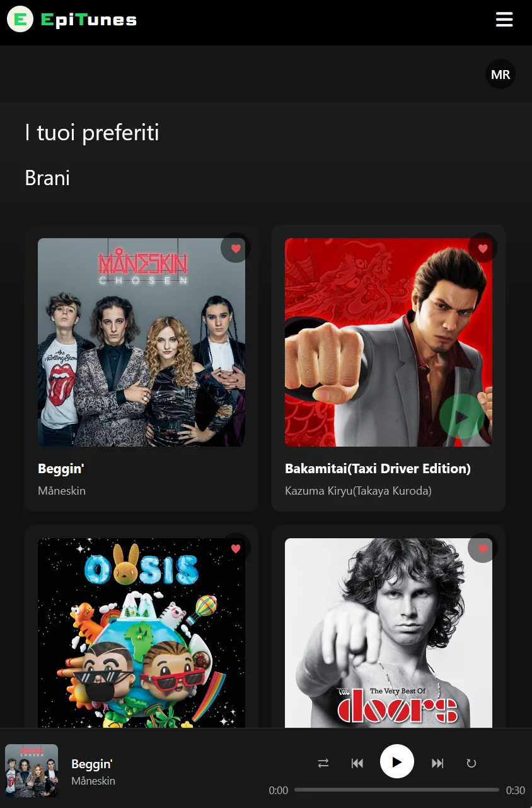
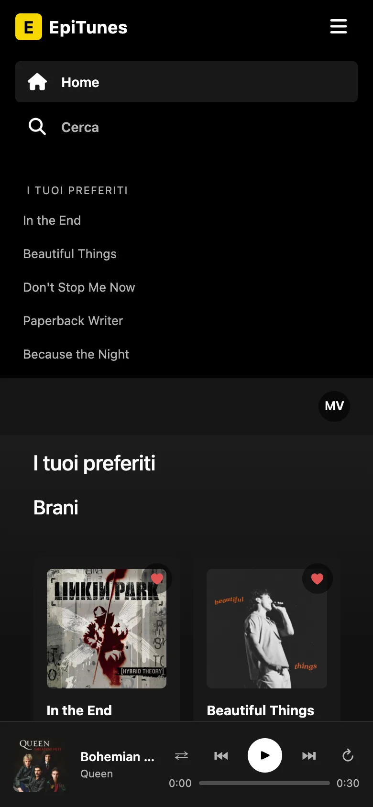
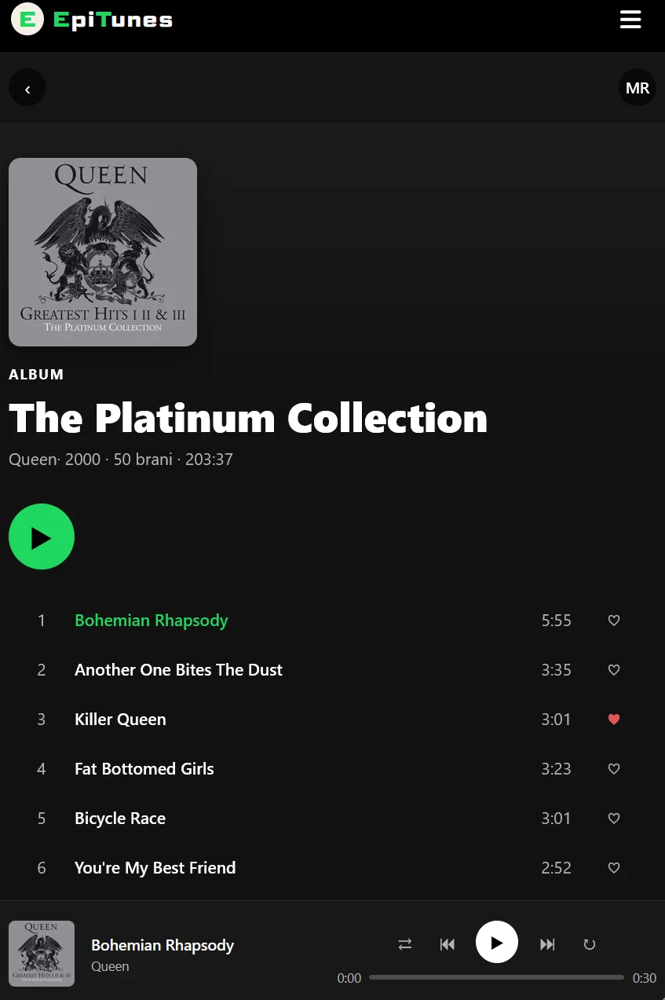
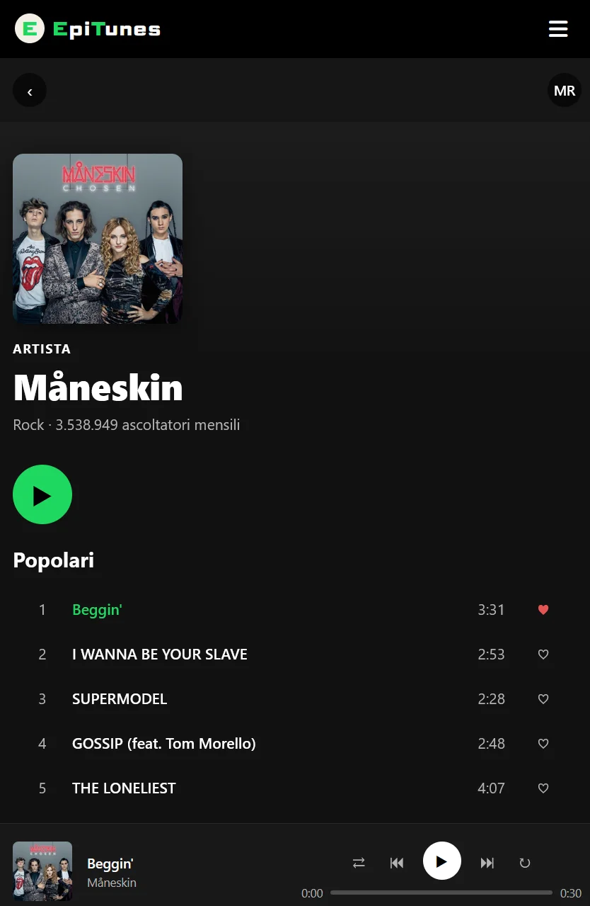

EpiTunes
La musica che cerchi, subito in ascolto.
- Francesca
- Gabriel
- Giovanbattista
- Alessandro
- Luca

Cerchi un brano, lo ascolti, lo ritrovi la volta dopo.
EpiTunes è una web app per scoprire, cercare e ascoltare musica. Si apre nel browser, dal telefono come dal computer, e ricorda quello che ti piace, utente per utente.
- 5pagine: Login, Home, Cerca, Album, Artista
- 30 sdi anteprima per ogni brano, presa dal catalogo di iTunes
- 0cose da installare: basta un link
Quattro passi, nessuna istruzione.
-
Entra e scopri
Dopo il login, la Home ti mostra preferiti e ascoltati di recente, e tre righe di suggerimenti.
-

Cerca
Scrivi un nome: i risultati arrivano mentre scrivi, divisi in brani, album e artisti.
-

Apri
Un album o un artista hanno la loro pagina, con tutti i brani.
-

Ascolta e salva
Un clic e parte. Il cuore lo salva tra i preferiti, che ritrovi su ogni pagina.
Si apre con il login.
Ti registri con nome, email e password, poi entri nella Home: in cima i tuoi preferiti, divisi in brani, album e artisti, poi gli ascolti recenti e i suggerimenti. Ogni utente ha i suoi, e le iniziali in alto aprono il menu con «Esci».

I risultati arrivano mentre scrivi.
Brani, album e artisti in tre righe, con le foto degli artisti. A campo vuoto tornano le ricerche recenti e i brani cercati.

Ogni album, ogni artista, la sua pagina.
L'album con anno, brani e durata; l'artista con i più ascoltati e i suoi album. Il brano in ascolto è in verde, il grande ▶ parte dall'inizio.
Stessa app, in tasca.
Sul telefono la navigazione sta in un menu a scomparsa; dal computer diventa una sidebar sempre visibile. Il player resta in basso, a portata di pollice.




Quello che fa, in otto righe.
- 01SuggerimentiTre righe in Home per partire subito.
- 02Ricerca istantaneaBrani, album e artisti mentre scrivi.
- 03Player veroPrecedente e successivo, shuffle, ripeti; brano e volume si trascinano.
- 04Un account a testaRegistrazione e accesso: preferiti e ascolti restano di chi li ha scelti.
- 05Preferiti ovunqueCuori su brani, album e artisti; in Home divisi per categoria.
- 06MemoriaAscoltati di recente, ricerche e brani cercati restano tra una visita e l'altra.
- 07Album e artistiPagine di dettaglio; dall'artista si aprono i suoi album.
- 08Per ogni schermoMenu a scomparsa sul telefono, sidebar sul computer.
Dove può crescere.
- 01Account online e playlistUn server per il login: preferiti e playlist su ogni dispositivo.
- 02Brani completiCollegarsi ad Apple Music o Spotify, oltre i 30 secondi.
- 03Musica senza pauseUn player che continua a suonare anche cambiando pagina.
- 04Suggerimenti su misuraDai preferiti e dagli ascolti, i generi che ami di più.
- 05App installabileUn'icona sul telefono, con i preferiti anche offline.
- 06Testi e condivisioneIl testo della canzone e un link per mandarla a un amico.
Dietro le quinte.
Cinque pagine HTML vere, login compreso, un file JavaScript comune e uno per pagina. I dati arrivano dalle API, il browser ricorda il resto, utente per utente.
- HTML
- CSS annidato
- Bootstrap 5.3
- JavaScript vanilla
- iTunes Search API
- TheAudioDB
- localStorage
- sessionStorage
Prima del codice, un piano.
Due documenti, aggiornati dopo ogni stand-up.
Project management chi fa cosa
- →Backlog a stepNove step, dallo 0 all'8: ogni voce ha chi, file e stato.
-
→Regole di lavoroUn branch a testa; su
mainunisce solo il Git manager.
Controllo e monitoraggio a che punto siamo
- →GanttChi fa cosa e in quale giorno; se un lavoro slitta, si sposta.
- →Sei KPIMisurati in pochi minuti, con un grafico ciascuno: il valore reale contro l'obiettivo.
- Avanzamento del minimo
- Rispetto del Gantt
- Integrazione su main
- Errori in console
- Pagine responsive
- Vincoli sul codice
Ogni clic porta a una pagina, con l'id nell'indirizzo.
Dalla API allo schermo, e dallo schermo alle orecchie.
Quattro gesti, seguiti passo per passo.
Scrivi nella ricerca
- Scrivi «queen»
-
Aspetta 400 ms dall'ultimo tasto
debounce -
Tre chiamate insieme
Promise.all -
Diventano
Track,Album,Artist - Le card compaiono
Clic su un brano
- Un solo listener sul contenitore
-
Legge
data-track-iddella card player.play(brano, coda)-
L'anteprima suona nell'
<audio> - ⏮ ⏭ shuffle e ripeti girano nella coda
Clic sul cuore
-
Il clic è sul cuore
.btn-fav - Il brano non parte
toggleFavourite-
Salvato per l'utente in
localStorage - Sidebar e Home si aggiornano
Cambi pagina
- Si carica una pagina nuova
- L'audio si ferma: sono pagine vere
restoreLastTrack- Legge la cronologia
- Il player è pronto con l'ultimo brano
Poche regole, uguali per tutti.
- 01Un listener per contenitoreFunziona anche sulle card create dopo (event delegation).
- 02I dati passano dai modelliSolo loro conoscono i nomi dei campi di iTunes.
-
03Testo, mai HTMLI dati delle API entrano con
createElementetextContent. -
04Solo
querySelectorNientegetElementById, nienteonclick, nientevar.
// Un listener per tutta la tracklist (da album.js, in breve)
tracklist.addEventListener("click", (event) => {
const row = event.target.closest("[data-track-id]");
if (!row) return;
const track = albumTracks.find(
(t) => t.id === row.dataset.trackId,
);
// Il cuore si controlla per primo: salva, non suona
if (event.target.closest(".btn-fav")) {
toggleFavourite(track);
return;
}
// Il brano parte con la sua coda
player.play(track, albumTracks);
});Un aiuto per capire,
il codice a mano.
Dove l'abbiamo usata quando e come
-
01Conflitti sui branchDa martedì a giovedì, nei merge su
main: i conflitti più complessi, risolti con Copilot di VS Code. - 02Progetto e documentiLunedì, brainstorming per lo scheletro di Project management e di Controllo e monitoraggio.
- 03Le APILunedì, istruzioni per capire come funzionano.
- 04Funzioni JavaScriptDurante lo sviluppo, la ricerca di una soluzione quando da soli non ci si arrivava.
Dove no cosa è rimasto nostro
Le implementazioni le abbiamo scritte a mano, man mano.
Quali AI ognuno del team le sue
- Copilot di VS Code · GPT Luna
- Claude Code
- Gemini
Cinque persone, un branch a testa.
- 4giorni di sviluppo, organizzati con l'Agile Project Management
-
47pull request unite su
main - ~3.800righe di HTML, CSS e JavaScript
- 0errori in console sulle cinque pagine
-
0
onclick,getElementByIdevar - 3larghezze provate: telefono, tablet, computer
- Luca Team Leader e JavaScript
- Gabriel Git manager, HTML e CSS comune
- Giovanbattista Home, artisti con foto e album, login
- Francesca Album, Artista, player, login e ricerche
- Alessandro Player, Cerca e preferiti per categoria
Ora vediamo il progetto.
Il codice è su github.com/Ilbollit0/Team-3-progetto-buildweek-2